Deep brochure · Full-page desktop + mobile captures · Print → PDF · Also exported as Word
دليل الميزات التفصيلي — كل أيقونة وفلتر وشاشة (ديسكتوب + موبايل)
White-label physical-therapy clinic platform. This document annotates every major control: app-bar icons, themes, languages, notifications, appointment list vs schedule, income/expense filters, and finance-summary cells — with full-page real screenshots.
شريط التطبيق العلوي — شرح كل أيقونة
These icons appear on almost every authenticated screen (Appointments, Income, Reports, Chat, …). Same behavior on Web, Android, and iOS.
Language switch rebuilds all labels (status chips, filters, finance headers). Theme switch repaints surfaces, cards, and charts for day/night clinic floors.
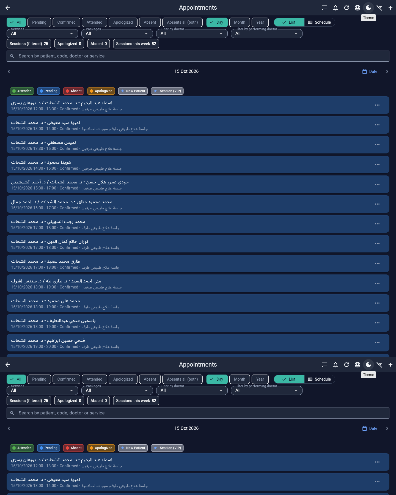
شاشة المواعيد — كل زر وفلتر وخلية
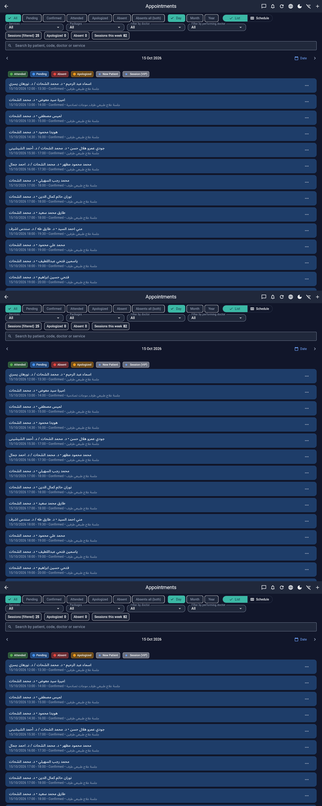
filter_list / filter_list_off. Collapses status chips, date chips, dropdowns, and count row to give the list more space.| Chip | What it shows |
|---|---|
| All | Resets status + (when used as “today reset”) clears doctor/service/package filters and jumps to today. |
| Pending | Not yet confirmed. |
| Confirmed | Booked and confirmed. |
| Attended | Completed / patient attended. |
| Apologized | Absent with cause (اعتذار). |
| Absent | Absent without cause / no-show style absence. |
| Absents all (both) | Both apologized + absent types together. |
List vs Schedule: List is best for search & status ops. Schedule is the floor board — who is in which room at which half-hour. Toggle lives in the filter row as a segmented control with list / calendar icons.
| Dropdown | Behavior |
|---|---|
| Services | Keep appointments that include that service name. |
| Packages | Filter by linked package id. |
| Filter by doctor | Supervising / billing doctor (doctorId). |
| Filter by performing doctor | Who ran the session (performingDoctorId) — doctors + trainees. |
| Legend / cell | Meaning |
|---|---|
| Green · Attended | Completed session color. |
| Blue · Pending | Awaiting confirmation. |
| Red · Absent | No-show / absent without cause. |
| Orange · Apologized | Absent with cause. |
| ⭐ New patient | Star marker for new patient priority. |
| ⭐ Session (VIP) | Starred / VIP session (isStarred). |
| Title line | Patient • Supervisor or Patient • Supervisor / Performer. |
| Subtitle line | Date, start–end, status label, services; optional Notes line. |
| ⋮ Show menu | Edit / status transitions (confirm, complete, cancel, absent…) by privilege. |
الدخل والمصروفات — شرح كل عنصر
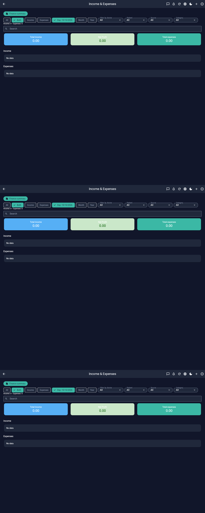
Teal button Finance summary (summarize icon) navigates to the owner P&L screen (§4).
| Chip | Effect |
|---|---|
| All / Both | Show income and expense sections together. |
| Income | Focus income stream. |
| Expenses | Focus expense stream. |
| Filter | What it does |
|---|---|
| Filter by doctor | Income/expense rows tied to that doctor. |
| Patient | Rows linked to a patient. |
| Source | Income source values. |
| Category | Expense categories (Salary, Rent, Supplies, Media, Other). |
Each income row shows: amount, source, date/time, notes, patient, doctor, payment status (Paid / Partial / Prepaid / Not paid).
Each expense row shows: amount, date/time, category, description, paid-by-doctor, optional recipient (salary).
Search box filters free text across visible fields. Counter text under filters: Income: N · Expenses: M.
الملخص المالي — كل عمود وخلية
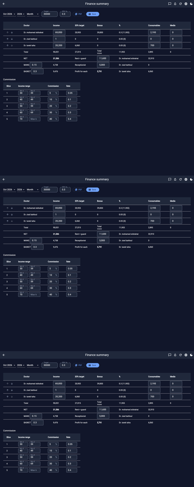
| Column / control | Meaning |
|---|---|
| ↑ ↓ arrows | Reorder doctors (saved order). |
| Doctor | Doctor display name. |
| Income | Sum of that doctor’s income in range. |
| 30% Target | Income × 30% factor (c30). |
| Bonus | Bonus amount derived from target logic. |
| % | Commission % from slices + computed value. |
| Consumables | Mapped expense bucket for that doctor. |
| Media | Media expense bucket. |
| Total row | Sums across doctors. |
| Cell | Meaning |
|---|---|
| NET | Net after doctor-level deductions — basis for splits. |
| Rent + guard | Editable shared clinic overhead (from Rent expenses / config). |
| Receptionist | Editable shared salary line (from Salary expenses / config). |
| MANG (rate) | Management share of NET (e.g. 0.15 = 15%). Editable rate. |
| BASKET (rate) | Basket/pool share of NET (e.g. 0.30). Editable rate. |
| Profit for each | Remaining profit figure after MANG/BASKET logic. |
| Per-doctor Net side column | Individual net after commission/consumables. |
| Column | Meaning |
|---|---|
| Slice | Tier index. |
| Income range | Min–max income band for the tier. |
| Commission | Percent for that band (editable). |
| Rate | Decimal form of commission (kept in sync). |
This screen is the commercial heart for partner clinics: transparent doctor income, targets, overhead, and MANG/BASKET splits — exportable as PDF for monthly meetings.
شاشات أخرى — التقاط كامل
Welcome + role, date/time card, quick actions (Add patient, Find patient, Book appointment, Today’s count), period chips, doctor filter, search, appointment rows with supervisor/performer.
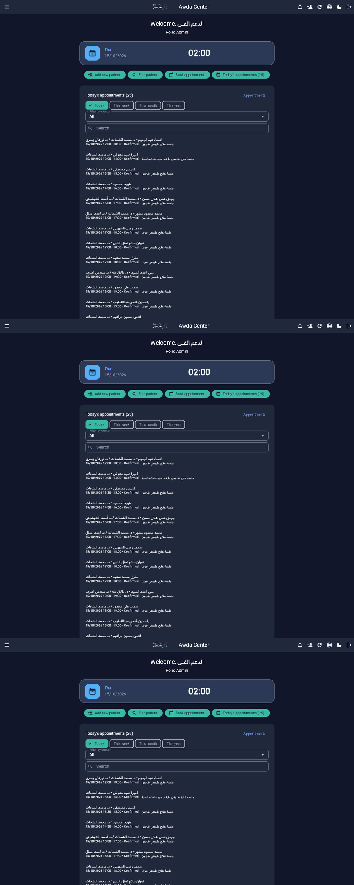
Total users, active users, today’s / week’s appointments, patients, doctors — plus deeper charts (income, workload, expenses) further down the scrollable page.
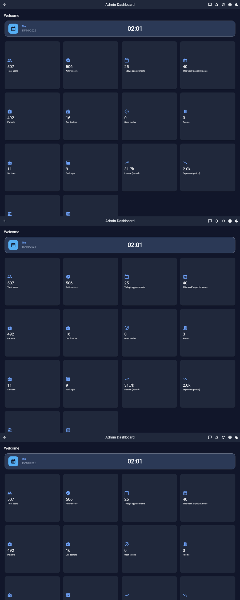
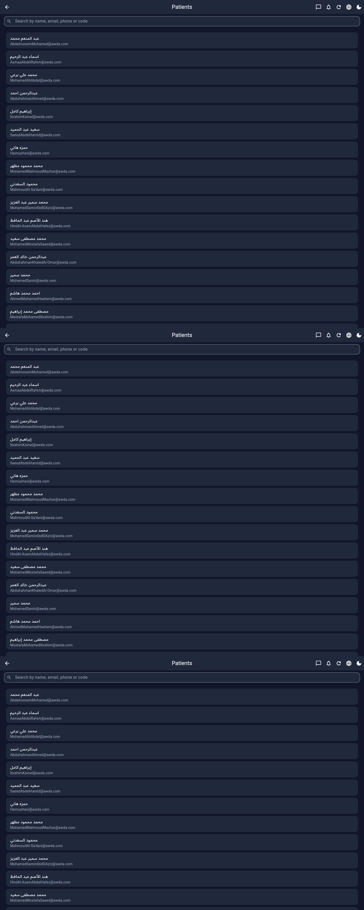
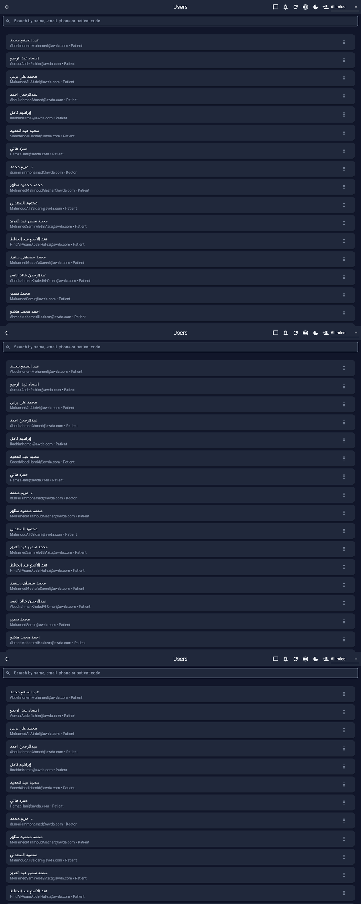
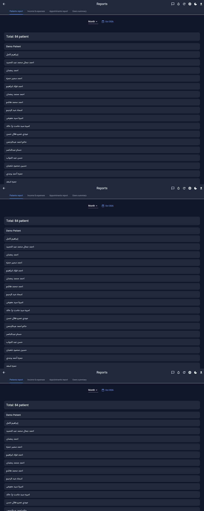
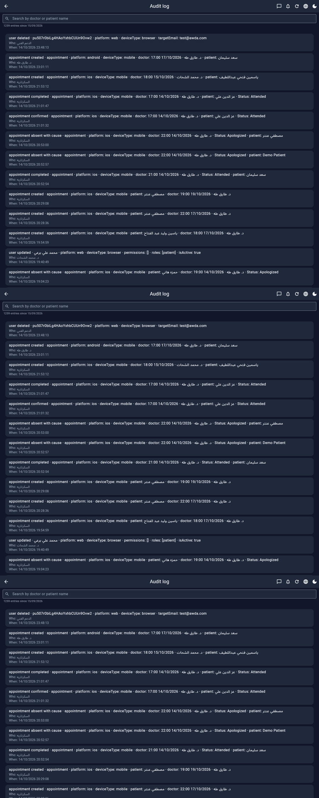
واجهات الموبايل — نفس الميزات بتخطيط عمودي
Captured at ~390×2800 CSS px (2× DPR). Same icons and filters; stacked layout for one-handed clinic use.
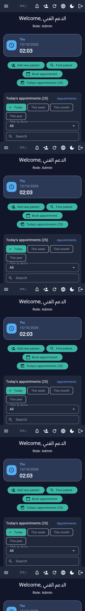
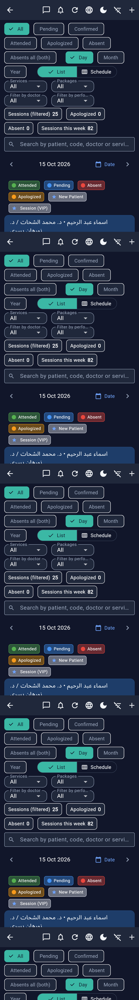
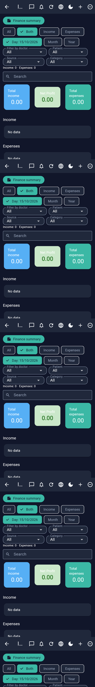
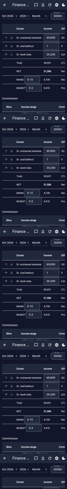
| Web | Android | iOS | |
|---|---|---|---|
| Full UI | ✓ | ✓ | ✓ |
| FCM push | ✓ | ✓ | ✓ |
| Local reminders | — | ✓ | ✓ |
| PDF / Excel | ✓ | ✓ | ✓ |
| APK in-app update | — | ✓ | — |
Roles: Admin · Supervisor · Secretary · Doctor · Trainee · Patient — with multi-role + per-user privilege overrides (including fine-grained chat media permissions).